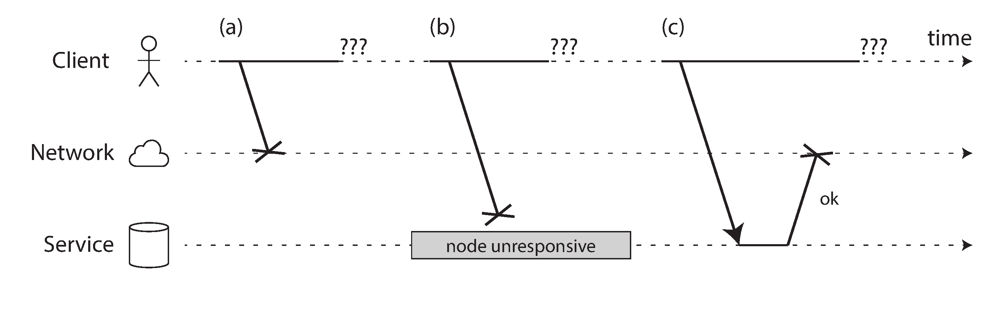
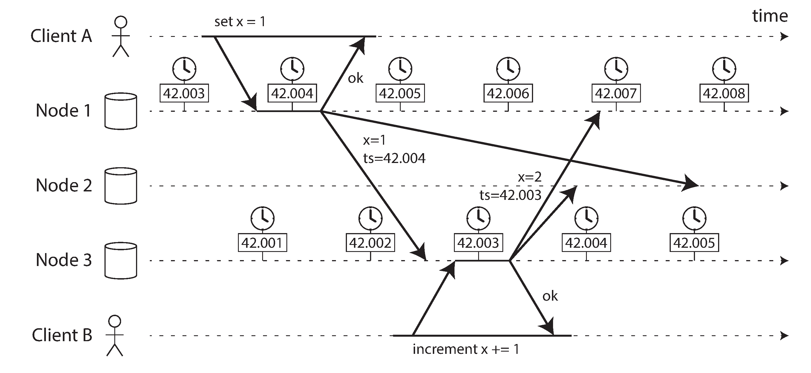
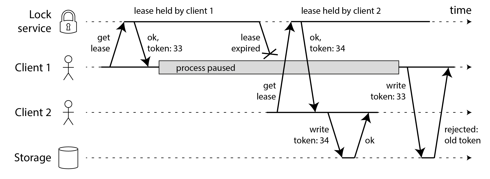

术语表 · 第 9 章 · 课程 9 / 14
分布式系统的麻烦
这一章不教你怎么做分布式，只做一件更值钱的事：把「会怎么坏」列清楚，并且当场指出每一种坏法会让你写错哪一行代码。它回答的是设计评审里最容易被跳过、也最容易出事的那一格：故障模型。
9.1单机是确定的，分布式不是
在一台机器上写程序，你对硬件的全部信心可以压缩成一句话：要么正常工作，要么彻底罢工。内存里的一个 int 写进去就是那个值；write() 返回成功，数据就在页缓存里；CPU 执行同一条指令两次，结果一样。fsync() 返回 0，你就认为数据落了盘（至于硬盘固件到底有没有把缓存刷下去，那是另一个问题，但至少它不会「一半成功一半失败」）。
硬件并不是长这样。这是一个刻意的设计选择：计算机宁可整机崩溃，也不肯返回一个错误的结果。ECC 内存、磁盘校验、TCP 校验和，全部在为这件事服务：把物理世界模糊、混乱、带噪声的现实，遮蔽成一个看起来数学般完美的抽象。你写 C 的时候享受的就是这层遮蔽。
分布式系统把这层遮蔽撕掉了。机器之间只能通过一条异步分组网络说话，而这条网络既不保证消息何时到达，也不保证它一定会到达。于是出现了一种单机上不存在的故障类型：
在分布式系统中，即使其他部分工作正常，系统的某些部分也很可能以不可预知的方式发生故障。这叫作部分失效（partial failure）。棘手之处在于，部分失效是非确定性的（nondeterministic）：任何涉及多个节点及其网络的操作，有时能够成功，有时却会莫名其妙地失败。正如我们稍后会看到的，你甚至可能根本 不知道 某件事究竟成功了没有！
把这句话按工程含义拆开，它实际上是三个独立的事实，每一个都能独立地让一段代码变错：
- 故障是局部的。一台机器挂了，另一台不知道；一个机架断电，跨机架的复制还在跑。系统不会整体停摆，它会在「一部分人认为正常、另一部分人认为已经死了」的状态里继续运行。
- 故障是非确定性的。同一个 RPC，昨天 3 ms 成功、今天超时、明天 200 ms 成功。你不能靠「重跑一次看看」来定位问题，因为第二次跑的是一个不同的实验。
- 结果可能未知。这是最要命的一条。超时不等于失败：请求可能压根没发出去，也可能对方已经执行完、只是响应丢了。超时是一种「我不知道」，而不是一种「没有发生」。
面试里这一条几乎必然出现，而且问法很朴素：「你调下游超时了，怎么办？」答「重试」的人会被追一句「重复扣款怎么办」；答「不重试」的人会被追一句「那它不是白丢了一次请求」。这两个答案都不对。先承认结果未知，再用幂等键/去重表把「未知」变成「可安全重放」，才是答案。这是 9.1 到 9.4 一路推下来的必然结论，后面会具体给。
「可靠」在分布式里的定义不是「不出故障」，是「出了故障，系统仍然做对的事」。所以设计评审第一个要问的是「你假设哪些东西不会坏」，而不是 QPS。这个假设清单就是你的故障模型，而所有「线上诡异问题」都是清单漏项。
9.2不可靠的网络：TCP 到底保证了什么
很多人以为用了 TCP 就不用管网络可靠性了。这是个昂贵的误解。TCP 确实做了很多：检测并重传丢包、把乱序恢复成有序、用校验和发现损坏、用拥塞控制决定发送速率。但它保证的边界很清楚：它保证字节流在「连接还活着」的前提下不丢不乱，它不保证连接活着，也不保证对端应用处理了这些字节。
四层里任何一层都能单独破掉你的假设：
| 层次 | TCP 保证 | 不保证（你的 bug 就长在这里） |
|---|---|---|
| 链路 | 丢包会重传，乱序会重排 | 重传也可能再丢；网线被拔了它插不回去。重试到超时后它只能报错 |
| 连接 | 断开时你会收到错误 | 断开前对方处理了多少字节，你不知道（RST 是内核发的，不是应用发的） |
| 内核 | 确认包到达 = 对端内核收到了 | 对端应用可能还没 read() 就崩了。要确认成功，必须应用层自己回一个成功响应 |
| 应用 | — | 回了一个成功响应，但它写数据库的那一步是否已提交？这是你要自己定义的事 |
所以「请求没有响应」这一种现象，至少有六种不同的原因，而且从客户端看它们完全一样：请求丢了；请求还在队列里排着；远端进程崩了；远端进程被 GC/虚拟机暂停了；远端处理完了但响应丢了；远端处理完了但响应被延迟了。图上画得很清楚。

这不是理论洁癖。书里引的实测数据值得记住，因为它们是评审时反驳「我们内网很稳」的弹药：一项针对中型数据中心的研究发现每月大约 12 次网络故障，一半断开一台机器、一半断开整个机架；增加冗余网络设备并不能像预想那样大幅减少故障，因为它防不住人为错误（交换机配置错误是停机主因）；不同云区域之间的高百分位往返时间最长可达数分钟；甚至存在单向故障：某块网卡丢掉所有入站包却仍能正常发包。
超时该设多长：没有正确答案，只有代价
如果没有明确反馈，检测故障唯一可靠的办法就是超时。而超时的长度是一个两难：设长了，故障恢复慢，用户干等；设短了，一台只是暂时变慢的机器会被误判死亡，然后它的负载被搬到别的节点。在系统已经高负载时，这一下可能触发级联失效，极端情况下所有节点互相宣告对方死亡，整个集群彻底停摆。
遗憾的是，我们使用的大多数系统都不具备上述任何一项保证：异步网络具有无界延迟（unbounded delay；也就是说，它会尽快尝试送达数据包，但数据包所需的传输时间没有上限），大多数服务器实现也不能保证一定在某个最长时间内处理完请求。对故障检测而言，系统仅仅在大多数时候运行得很快还不够：如果超时时间设得很短，一次短暂的往返时间尖峰就足以打乱整个系统。
注意「只要求大多数时候快是不够的」这句话的分量。它意味着你不能用 p99 延迟来决定超时。p99 的含义是「1% 的请求比它慢」，而故障检测要对的是那个 1%。工程上的做法是把它当控制问题处理：超时 = f(观测到的延迟分布)，动态调整（类似 TCP 重传超时、Phi 累积故障检测器），再加退避重试（指数退避 + 抖动）避免重试风暴。但无论怎么调，它都只是猜测。这一点必须写进设计文档，因为下游的每一条正确性论证都建立在「我们可能猜错」之上。
9.3不可靠的时钟：两套时钟，两种错法
系统里有两种时钟，面试里几乎每次都有人把这两样混着讲：
- 日历时钟（time-of-day clock / wall-clock time）：
clock_gettime(CLOCK_REALTIME)。返回纪元以来的秒数，有绝对含义，因此可以和别的机器比较。但它会被 NTP 校正，可能往回跳；闰秒、夏令时也会让它跳。 - 单调时钟（monotonic clock）：
clock_gettime(CLOCK_MONOTONIC)、CLOCK_BOOTTIME。只保证向前走，适合量持续时间（超时、耗时）。但它的绝对值毫无意义（可能是开机以来的纳秒数），跨机器比较单调时钟是纯粹的 bug。
规则很短：量间隔用单调时钟，标时间点用日历时钟，永远不要拿日历时钟去算间隔，永远不要拿单调时钟去跨机器比较。违反第一条会让你的超时计算在 NTP 回拨时变成负数或巨值；违反第二条会让你的分布式排序彻底失效。
日历时钟有多不可靠，值得报几个数：Google 假定其服务器时钟漂移最高 200 ppm，即每 30 秒重新同步一次的时钟会漂移 6 ms，每天同步一次的会漂移 17 秒；经互联网做 NTP 同步，实测能达到的最小误差是 35 ms，网络尖峰时误差到 1 秒左右；有些 NTP 服务器本身配置错误，报的时间能差几个小时；虚拟机被暂停数十毫秒，从应用视角看就是时钟突然前跳；而 MiFID II 要求高频交易机构的时钟与 UTC 误差在 100 微秒以内，那要靠 GPS + PTP + 原子钟，不是靠默认的 ntpd。
最后写入者胜（LWW）为什么会静默丢数据
多主复制里最常见的一种冲突解决是 LWW：给每次写入打一个日历时钟时间戳，冲突时保留时间戳大的。它看起来合理，直到你意识到「因果上更晚」和「时间戳更大」是两件不同的事。

图里三个数字值得记住：客户端 A 在节点 1 写 x = 1，时间戳 42.004 s；这次写入复制到节点 3；客户端 B 在节点 3 上把 x 递增，得到 x = 2，时间戳 42.003 s，比它所依赖的那次写入还早 1 毫秒。两次写入最后都复制到节点 2，节点 2 按 LWW 规则比较时间戳，判定 x = 1 更新，丢掉递增。用户的加一操作凭空消失，没有任何报错，没有任何日志。
这就是「时钟假设失效」的典型形态：它不是崩溃，是静默的数据丢失。书里专门强调过这一点：CPU 坏了或网络配错了，系统多半会彻底不工作，问题很快暴露；而石英钟有偏差、NTP 配错了，一切看起来都正常，最终结果是隐蔽而细微的数据损坏。所以如果你的软件依赖时钟同步，就必须监控所有节点之间的时钟偏差，把偏得太远的节点宣告死亡并移出集群，把「时钟异常」提升成一种可被检测的节点故障。
9.4进程暂停：租约为什么会变成双主
这是全章最实用、也最常被写错的一段。场景是：数据库每个分片只有一个领导者，只有领导者能接受写入。节点怎么知道自己还是领导者？常见做法是向锁服务申请一份租约（lease），也就是一种带超时的锁。拿到租约，就知道在到期前自己还是领导者；要维持身份就定期续租；节点挂了停止续租，租约到期后别的节点可以接管。
看起来没问题，但它藏着一个循环：
while (true) {
request = getIncomingRequest();
// 确保租约至少还剩 10 秒
if (lease.expiryTimeMillis - System.currentTimeMillis() < 10000) {
lease = lease.renew();
}
if (lease.isValid()) {
process(request); // ← 这里可能停了 15 秒
}
}两个 bug 叠在一起。它先拿本地日历时钟去比较一个由别的机器设定的到期时间，两台机器时钟差几秒，行为就变得古怪。更麻烦的是，即使改成只用本地单调时钟，代码仍然假设「读时钟」和「处理请求」之间只隔了极短时间。可线程完全可能在 lease.isValid() 附近暂停 15 秒再恢复，期间租约过期、另一个节点已经接管；而这个线程毫不知情，因为它要到下一轮循环才会重新读时钟。在此之前，它已经用一份失效的租约处理了请求。
暂停 15 秒合理吗？完全合理。书里列了一长串原因：锁争用、STW 垃圾回收（历史上曾停几分钟）、虚拟机挂起/实时迁移、笔记本合盖、CPU 窃取时间、同步磁盘 I/O（Java 类加载器首次加载类就可能触发）、换页到磁盘甚至抖动、SIGSTOP（shell 里按 Ctrl-Z 就能发出）。这些事件可以在代码的任意位置抢占线程，过一段时间再让它继续，而线程对此毫无察觉。
分布式系统中的节点必须假定：自己的执行可能在任意时刻暂停很长时间，哪怕正处于函数执行途中。暂停期间，外部世界仍在继续运转，甚至可能因为这个节点迟迟没有响应而宣告它死亡。最终节点恢复运行时，甚至意识不到自己曾经“睡着”，直到稍后再次读取时钟。
「用互斥锁保护临界区」那套单机多线程的经验在这里直接失效：分布式系统没有共享内存，只有不可靠网络上的消息，所以没有一把锁能同时覆盖两个节点的执行。这不是编程技巧问题，是模型问题。
反例：租约双主，两个客户端同时写坏同一个文件
文件存储前面加一个锁服务。客户端要写文件，先向锁服务申请租约，成功后直接写存储；存储服务只认「你有没有租约」这件事，不做别的检查。锁服务用共识算法实现，看起来已经很扎实了。
客户端 1 拿到租约后进程暂停（GC 或虚拟机挂起），租约过期；客户端 2 取得同一文件的租约开始写；客户端 1 恢复后仍以为自己持有租约，继续写。两个客户端的写入交错落盘，文件损坏。这不是纯理论，HBase 曾经就有这个缺陷。更隐蔽的变体是：客户端 1 在崩溃之前发出的写请求在网络上延迟了一分多钟，等它抵达存储时租约早已易主，客户端 2 的写入已经完成，结果同样是数据损坏。
改法：不能靠「关掉僵尸」（STONITH / 断网 / 关机），它防不住超长网络延迟，也可能所有节点互相关停，而且等你发现僵尸时数据往往已经坏了。正确做法是栅栏令牌（fencing token）：锁服务每次授权时返回一个单调递增的令牌，客户端每次写都带上它，存储服务负责拒绝令牌比已见过的更小的写入。客户端 1 拿 33，客户端 2 拿 34；客户端 1 恢复后带着 33 来写，被存储直接拒掉。关键点在于：检查必须在被保护资源那一侧做，不能在客户端做。

无主复制里还有一种更省事的写法：把栅栏令牌放在时间戳的最高有效位。这样客户端 2 生成的所有 34… 时间戳都大于客户端 1 的 33…，即使客户端 1 的写入实际发生得更晚，也会在仲裁读和读修复中被覆盖掉。
更一般的结论：任何「我持有某个身份/资格」的判断，都必须由被作用的那一方验证，而且验证要基于单调递增的凭证，不能基于时间。同样的道理适用于所有主键选举、所有分布式锁、所有「leader 才能写」的路径。Kafka 的 epoch、ZooKeeper 的 zxid、etcd 的 revision、Raft 的 term，全部是这一条的不同实现。
9.5知识、真相与谎言：为什么必须有多数派
剩下的问题是：一个节点凭什么相信另一个节点说的话？它只能根据收到（或没收到）的消息来猜。它无法区分「对方挂了」和「网络断了」。书里用三个故事把这件事讲得很残酷：
- 半失联节点。它能收到所有消息，但发出的消息全部丢失。它明明工作正常，其他节点却听不见它的回应；超时后一致宣告它死亡，把它抬向墓地，而它一路喊「我还没死」。
- 暂停一分钟的节点。期间不处理请求也不发响应，其他节点判定它死亡并接管；暂停结束，它的线程若无其事地继续跑，甚至不知道一分钟过去了。
- 被宣告死亡的节点。它自己觉得自己活得很好，但没有用。
结论：节点不能相信自己对处境的判断。所以分布式算法不依赖任何单个节点，而依赖法定人数（quorum），通常是通过半数。三节点容忍一个故障，五节点容忍两个；而多数派的关键性质是安全：任意时刻只可能形成一个多数派，不可能同时出现两个作出冲突决定的多数派。「宣告某节点死亡」这件事也一样：如果达到法定人数的节点宣告它死亡，那么即使它觉得自己还活着，也必须下台。
安全性与活性：两类完全不同的承诺
这两个词能让你把「保证了什么」和「什么时候不保证」分开写：
| 属性类型 | 通俗说法 | 严格判据 | 违例后果 |
|---|---|---|---|
| 安全性（safety） | 坏事不会发生 | 一旦被违反，可以指出具体哪一个时刻被破坏 | 不可撤销，损害已经造成（比如发出了两个相同令牌） |
| 活性（liveness） | 好事最终会发生 | 某个时刻可能还没成立，但未来始终有希望成立；定义里通常含「最终」 | 可以靠时间修复（等网络恢复） |
如果安全属性遭到违反，我们可以指出它在哪一个具体时刻被破坏。例如，唯一性遭到破坏时，可以找到返回重复栅栏令牌的那次具体操作。安全属性一旦被违反，就无法撤销——损害已经造成。活性属性正好相反：它在某个时刻可能尚未成立（例如节点已经发出请求，却还没收到响应），但未来始终还有满足它的希望。
这个区分有直接的工程后果，它给出了一条工程规则：安全属性必须在系统模型允许的所有情形下始终成立（哪怕所有节点都崩了）；活性属性可以附加条件（例如「多数节点存活且网络最终恢复时」）。所以「最终一致性」是活性承诺：它不承诺你什么时候能看到新值，只承诺总有一天会。评审里写「最终一致」而不写时间界，等于什么都没承诺。
系统模型：把你的假设写成可反驳的句子
三种时序模型正好对应三种「你以为的可靠性」：
- 同步模型：网络延迟、进程暂停、时钟误差都有上界。现实中不成立。
- 部分同步模型：大多数时候像同步系统，偶尔突破界限，突破时延迟/暂停/误差可以任意大。这是现实系统最实用的模型，也是绝大多数共识算法（Raft/Paxos/Zab）假设的模型。
- 异步模型：不能作任何时序假设，连时钟都没有，因而连超时都不能用。限制极强。
节点失效模型则从「崩溃停止」到「崩溃恢复」到「拜占庭（任意行为）」。这里有一条评审时非常好用的判据：如果你的系统要求自动故障切换，却没用经过验证的共识算法，那它大概率不安全，因为「谁是主」这件事本身就需要共识，而手写的选举逻辑几乎必然在某个边界条件下双主。第 10 章会把这条展开。
另外别忘了跛行节点（limping node / gray failure / fail-slow）：它还能响应健康检查，但慢到干不了活；千兆网卡可能因驱动缺陷掉到 1 Kb/s，进程可能把时间全花在 GC 上，磨损的 SSD 可能极不稳定。这类故障比彻底死掉的节点更难处理，因为它不会触发你的超时，只会让你的 p99 慢慢烂掉。设计评审里应该专门问一句：「你的健康检查能识别出慢节点吗，还是只识别死节点？」
9.6面试里怎么答
被问「分布式系统难在哪」或者「你怎么保证这个调用成功」时，别背「CAP」，用这一段，四句话，每句都带具体条件：
「分布式系统里唯一的确定性是：超时意味着结果未知，不意味着失败。请求可能没发出去，也可能对方执行完了响应丢了，客户端分不出这两种。
所以我不会用「重试」来保证成功，我用幂等键 + 去重表：每个请求带一个业务唯一键，服务端按这个键做一次条件写入，重复请求直接返回上次结果。这样重试是安全的，超时也不再是灾难。
故障检测靠超时，而超时长度只能是猜测：网络是异步的、延迟无上界。我会用基于延迟分布动态调整的超时加指数退避抖动，并且接受「可能误判」。误判的代价是双主或重复执行，所以任何「我持有租约/我是主」的判断，都要在被写入的那一侧用单调递增的栅栏令牌验证，不能靠时间。
时钟只用来标时间点，不用来排序或算间隔。跨节点的因果顺序交给逻辑时钟或共识，不交给 NTP。日历时钟可能回拨，200 ppm 的漂移就能让 LWW 静默丢写入。」
这四句能扛追问，因为每一句都自带「为什么不能更简单」。问「为什么不用时钟排序」，你答 42.004 对 42.003 那个例子；问「为什么栅栏令牌要在存储侧检查」，你答客户端检查等于没检查，因为僵尸客户端自己认为合法。
练习判断这是哪一种失效
下面五个场景都来自真实架构，故障现象看起来很像（都是「偶发、不可复现、数据对不上」），但根因分属不同类别。选错类别，改法就会完全错。
订单服务调用支付网关，3 秒超时后重试一次。上线三个月后发现少量用户被扣了两次款，日志里两次调用都显示成功。
超时只说明「不知道」，不说明「没扣」。重试把一个未知变成了两个可能都已执行的操作。改法是在支付网关侧用业务幂等键去重，而不是在调用方减少重试次数，减少重试只是降低概率。
Redis 主从 + 哨兵，故障切换后短暂出现两个节点都接受写入，同一批计数器更新在两边各自累加，切换完成后总数偏大。
两个节点同时认为自己是主，且没有用单调递增的凭证把旧主隔离掉。注意这和「时钟」无关：即使所有时钟完美同步，只要切换协议本身不能排除旧主，照样双主。检查清单：写路径上有没有 fencing token 或 epoch。
三节点无主复制，客户端按本地时钟给写入打时间戳，冲突时保留较大者。运营发现「点赞数偶尔少 1」，没有报错，重放也复现不了。
典型的「因果更晚但时间戳更早」。两次写入只差 1 ms，而两台机器的时钟偏差可以轻易超过这个量级。改法是改用逻辑时钟/版本向量做冲突检测，或者干脆让写入幂等且可合并（CRDT），而不是靠时钟裁决。
Kubernetes 上的有状态服务用租约做选主，节点偶尔因为宿主机实时迁移被挂起 30 秒，恢复后仍然按旧租约处理了几个写请求，下游出现两条冲突的记录。
这是 9.4 的原样复现。节点恢复时并不知道自己「睡过」，它要等到下一轮循环才重新读时钟。修法不是缩短租约，而是让下游拒绝旧令牌的写入。虚拟机暂停是常态，不是异常。
服务健康检查一直通过，但 P99 从 80 ms 涨到 4 s，吞吐掉了一半；重启后恢复，几小时后再次发生。机器 CPU 使用率显示不高。
「还能响应，但干不了活」：可能是 GC、可能是驱动缺陷、可能是磁盘抖动或换页。CPU 不高恰恰是线索：时间花在等 I/O 或等锁上。健康检查要基于「能完成有代表性的工作」，而不是「端口能连上」。
贴进架构评审文档的话：「本设计假设部分同步模型（网络延迟无上界、进程可在任意指令处暂停任意时长、日历时钟漂移 ≤ 200 ppm 且可能回拨）。因此：(1) 所有跨服务写操作携带业务幂等键，超时重试安全；(2) 所有『主/租约』身份由下游以单调递增栅栏令牌验证，不依赖时间比较；(3) 跨节点事件顺序由逻辑时钟/共识决定，不使用日历时钟做 LWW；(4) 安全属性在全故障下仍成立，活性仅在多数节点存活且网络最终恢复时承诺；(5) 监控项包含节点间时钟偏差与慢节点检测（P99 而非存活探测）。」
一手资源
第 9 章 分布式系统的麻烦（中文全译）：重点读「进程暂停」「分布式锁和租约」「系统模型与现实」三节。第二节给你可以照抄的栅栏令牌方案，第三节给你写故障模型时的词汇表。
随时问我
把你系统里所有「靠超时判断对方死活」的地方列出来发我，尤其是选主、分布式锁、任务重新分配这三类。我们逐条看：误判之后，谁有能力阻止那个「以为自己是主」的进程继续写。